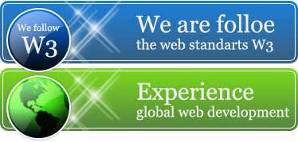

Webstudyo
Webstudyo.gr is a trendy web design agency that offers a variety of the Internet services such as web design, web development, content management, SEO and many others. We always try our best to deliver your project on time. If you wish to learn more about us and our projects you can proceed to our portfolio page. In case you are ready to talk to representative call or e-mail us.
About Us
Webstudyo.gr is a new and fast growing company. We are committed and professional crew that can carry out and deliver an outstanding product within a set time limit. Since the beginning we have been proving over and over quality and reliability of our execution..
team members have been in the business since the introduction of the World Wide Web to the masses. Some of our employees have more than a decade of working experience, hence all of our projects are built using solid and bullet-proof technologies. Also, we constantly utilize new available technological resourses.
